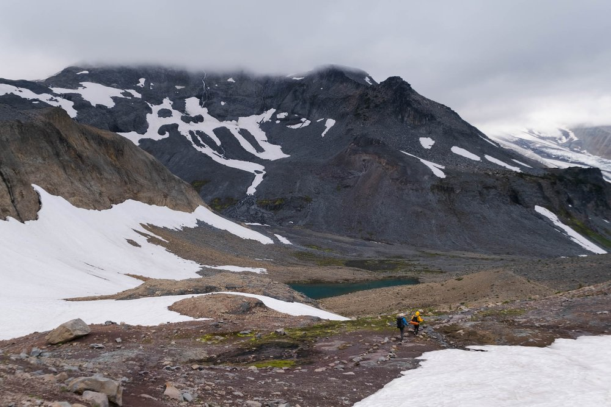

Welcome! Your next adventure awaits!
Welcome to Outdoor Adventuring, an amazing guide for outdoor enthusiasts! Whether you are donning your boots to go on a relaxing day hike, or you are preparing for multi-day backpacking adventure, this site will aid you! You can explore tips, tools, and gear advice to assist you in making your adventures safe, enjoyable, and memorable. I hope to see you on the trails!
Hiking
Hiking is one of the easiest and most rewarding ways to explore the outdoors. Whether you're trekking through lush forests or climbing scenic trails, it's a great way to connect with nature and stay active.
Backpacking
Backpacking blends hiking with overnight camping in a challenging, yet highly satisfying way. Carrying all your essentials on your back, you can venture into remote landscapes, camp under the stars or in a tent, and experience the wilderness in its purest form.